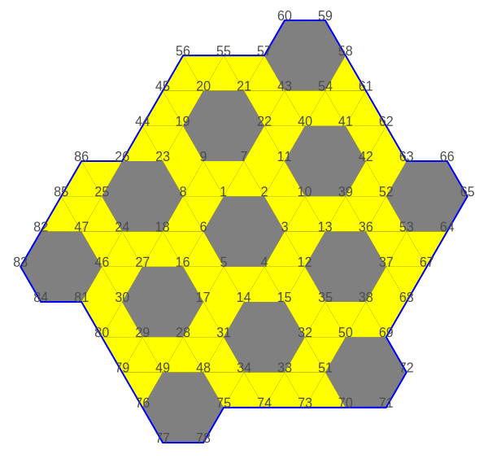
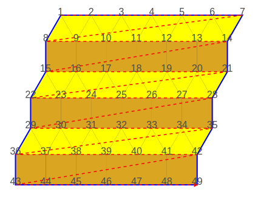
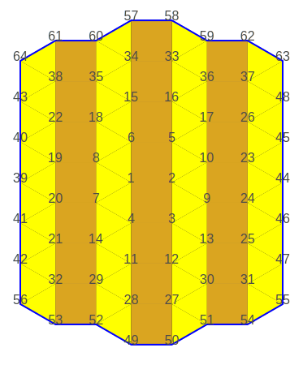
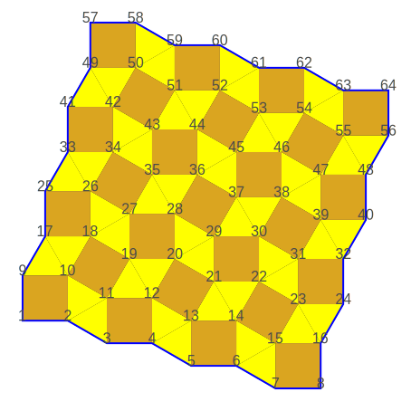
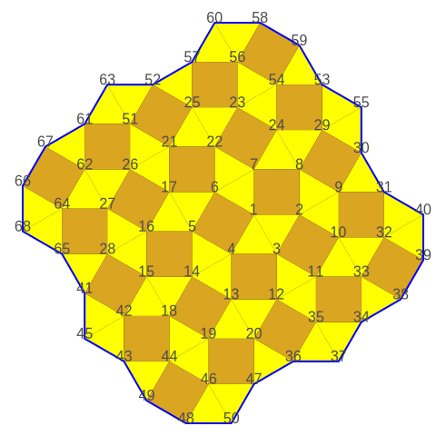
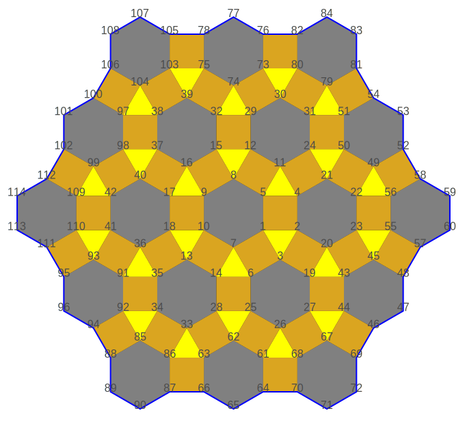
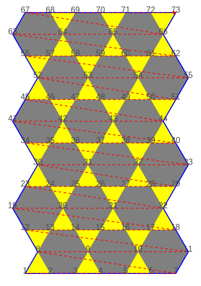
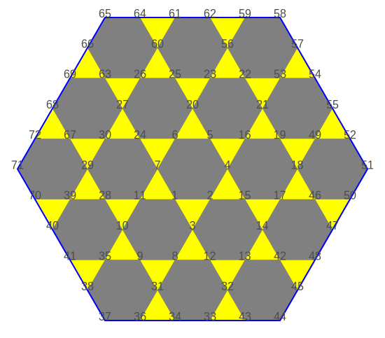
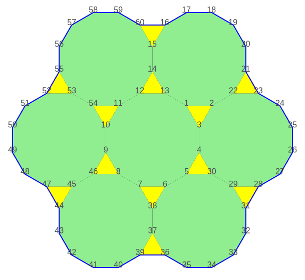
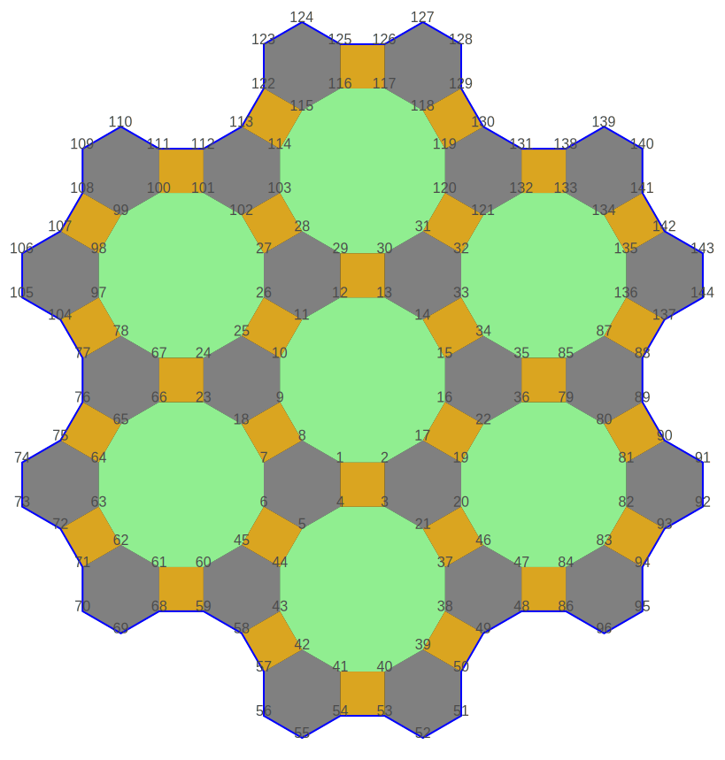

Creation of semi regular tessellations
Finite sets of the 8 semi regular tessellations (see Wikipedia) can be created.
1, pattern [(3₄.6)]
Tiling.pattern_33336(5)
|  |
| Finite set of a (3₄.6) tiling |
2, pattern [(3₃.4₂)]
Fast method
Tiling.pattern_33344(6, 6)
|  |
| Finite set of a (3₃.4₂) tiling |
Slow method
Tiling.pattern_33344(2)
|  |
| Finite set of a (3₃.4₂) tiling |
3, pattern [(3₂.4.3.4)]
Fast method
Tiling.pattern_33434(7, 7)
|  |
| Finite set of a (3₂.4.3.4) tiling |
Slow method
Tiling.pattern_33434(3)
|  |
| Finite set of a (3₂.4.3.4) tiling |
4, pattern [(3.4.6.4)]
Tiling.pattern_3464(3)
|  |
| Finite set of a [(3.4.6.4)] pattern |
5, pattern [(3.6.3.6)]
Fast method
Tiling.pattern_3636(6, 6)
|  |
| Finite set of a [(3.6.3.6)] pattern |
Slow method
Tiling.pattern_3636(3)
|  |
| Finite set of a [(3.6.3.6)] pattern |
6, pattern [(3.12₂)]
Tiling.pattern_31212(2)
|  |
| Finite set of a [(3.12₂)] pattern |
7, pattern [(4.6.12)]
Tiling.pattern_4612(2)
|  |
| Finite set of a [(4.6.12)] pattern |
8, pattern [(4.8₂)]
Tiling.pattern_488(4)
 |
| Finite set of a [((4.8₂)] pattern |
The source code for this page can be found
here.